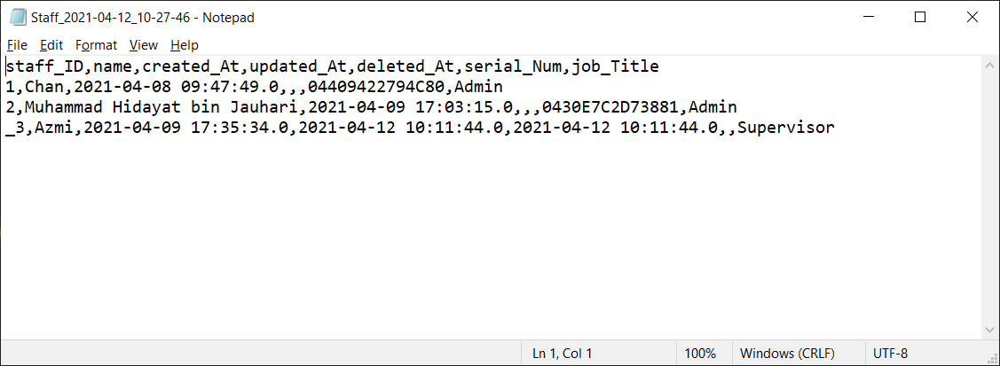
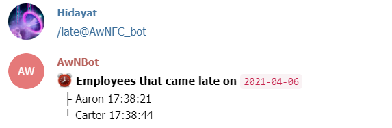

ATTENDANCE WITH NFC
About Attendance with NFC
This is a Java dekstop application that able to record the attendance of the employees using NFC. Using NFC for taking the attendance of the employess would greatly decreases the time needed to record the attendance of the employees each day and reduces errors that could be done by human being. Besides recording the attendance of the employees, this application would also be able to send notification to a personal/group chat in Telegram through Telegram Bot. User(s) in the chat would able to receive notification everytime an employee clocks in and clocks out. User(s) could also get summary regarding the attendance such as the % of employees attended to work today through the commands in Telegram. For administrators, they could also export the list of employees and attendance for today in csv format. Lastly, this application is currently ver 1.0 and hopefully more features and improvement in user interfaces could be done in future versions. THANK YOU!
Features
- This is the home page.
- Tap the NFC card to the reader after employees choose to clock in or clock out.
- The welcome back screen when employee clocks in.
- Error message shown when the card is not registered in the database
- When employee clocks in for the second time of the day.
- When employee clocks out before 6 p.m.
- Goodbye screen when employee successfully clocked out.
- When employee tries to clock out without clock in.
- When employee clocks out for the second time of the day.
- Show today's attendance after clicking on "Attendance" button.
- Search attendance records after clicking on "Search" button.
- Export today's attendance record in .csv file.
- Export full attendance record in .csv file.
- Telegram bot sending notification when an employee clocks out
- Check average arrival time using the command "/avgintime@AwNFC_bot" in group chat.
- Check percentage of employees attended today using the command "/attpercent@AwNFC_bot" in group chat.
- Set up admin before entering for the first time.
- Tap the NFC card to the reader after admin clicked the admin button.
- Direct to admin page once the NFC card is verified.
- Error message shown when user outside of admin tried to enter admin page.
- Show the list of current employees after clicking on "Employee" button.
- Admin could search for employee using the search bars.
- Show list of current and existing employees in the database.
- Add new employee into the database.
- Select an employee to update his/her info
- Disable employee that left the company.
- Import list of employees based on given format.
- Export list of employees in .csv file. 
- Telegram bot sending notification when an employee clocks in
- Check employee that came late using the command "/late@AwNFC_bot" in group chat. 
- Check average leaving time using the command "/avgouttime@AwNFC_bot" in group chat.
- Check average working time using the command "/avgouttime@AwNFC_bot" in group chat.

Contributors
Chan Jin Xuan
Computer Science Student of Multimedia University
Internship at G3 Global Bhd

Muhammad Hidayat bin Jauhari
Computer Science Student of Multimedia University
Internship at G3 Global Bhd